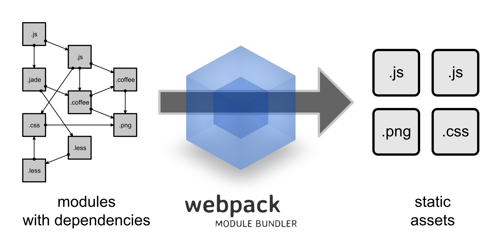

Build systems
Black White
disunited solutions
- jQuery, Knockout, Angular, Marionette, React
- Underscore, lodash, Lazy, ES6
- MVC, MVVM, Flux
Different versions
Formats
- LESS, SCSS, SASS, Stylus — for styles.
- Handlebars, jade, EJS — for templates.
- JSON, JSON5, PJSON, XML — for data.
- CoffeeScript, JSX, ES6 — scripts and so on.
Local problems
- Growth of the project
- Dependency management
- Reloading the webpage
- Project state
Solution

The real one
Webpack

But first about npm
What is npm?
NPM - Node Package Manager
package.json
{
"name": "canvas-project",
"version": "0.1.0",
"devDependencies": {
"canvas-chart": "~1.3.0"
}
}Bower
Install Bower
npm install -g bowerInstall package
$ bower install < package >
# registered package
$ bower install jqueryGulp - task runner

Why it's good?
streaming build system
Config example
var gulp = require('gulp');
var jshint = require('gulp-jshint');
var concat = require('gulp-concat');
var rename = require('gulp-rename');
var uglify = require('gulp-uglify');
// Линтинг файлов
gulp.task('lint', function() {
gulp.src('./src/*.js')
.pipe(jshint())
.pipe(jshint.reporter('default'));
});
// Конкатенация и минификация файлов
gulp.task('minify', function(){
gulp.src('./src/*.js')
.pipe(concat('all.js'))
.pipe(gulp.dest('./dist'))
.pipe(rename('all.min.js'))
.pipe(uglify())
.pipe(gulp.dest('./dist'));
});
// Действия по умолчанию
gulp.task('default', function(){
gulp.run('lint', 'minify');
// Отслеживаем изменения в файлах
gulp.watch("./src/*.js", function(event){
gulp.run('lint', 'minify');
});
});About webpack
- Code analyze
- Task runner
- Usage both npm and bower
Config example
import webpack from 'webpack';
import path from 'path';
import ExtractTextPlugin from 'extract-text-webpack-plugin';
const developmentEnvironment = 'development' ;
const productionEnvironment = 'production';
const testEnvironment = 'test';
const getPlugins = function (env) {
const GLOBALS = {
'process.env.NODE_ENV': JSON.stringify(env),
__DEV__: env === developmentEnvironment
};
const plugins = [
new webpack.optimize.OccurenceOrderPlugin(),
new webpack.DefinePlugin(GLOBALS) //Tells React to build in prod mode. https://facebook.github.io/react/downloads.html
];
switch (env) {
case productionEnvironment:
plugins.push(new ExtractTextPlugin('styles.css'));
plugins.push(new webpack.optimize.DedupePlugin());
plugins.push(new webpack.optimize.UglifyJsPlugin());
break;
case developmentEnvironment:
plugins.push(new webpack.HotModuleReplacementPlugin());
plugins.push(new webpack.NoErrorsPlugin());
break;
}
return plugins;
};
const getEntry = function (env) {
const entry = [];
if (env === developmentEnvironment ) { // only want hot reloading when in dev.
entry.push('webpack-hot-middleware/client');
}
entry.push('./src/index');
return entry;
};
const getLoaders = function (env) {
const loaders = [{ test: /\.js$/, include: path.join(__dirname, 'src'), loaders: ['babel', 'eslint'] }];
if (env === productionEnvironment ) {
// generate separate physical stylesheet for production build using ExtractTextPlugin. This provides separate caching and avoids a flash of unstyled content on load.
loaders.push({test: /(\.css|\.scss)$/, loader: ExtractTextPlugin.extract("css?sourceMap!sass?sourceMap")});
} else {
loaders.push({test: /(\.css|\.scss)$/, loaders: ['style', 'css?sourceMap', 'sass?sourceMap']});
}
return loaders;
};
function getConfig(env) {
return {
debug: true,
devtool: env === productionEnvironment ? 'source-map' : 'cheap-module-eval-source-map', // more info:https://webpack.github.io/docs/build-performance.html#sourcemaps and https://webpack.github.io/docs/configuration.html#devtool
noInfo: true, // set to false to see a list of every file being bundled.
entry: getEntry(env),
target: env === testEnvironment ? 'node' : 'web', // necessary per https://webpack.github.io/docs/testing.html#compile-and-test
output: {
path: __dirname + '/dist', // Note: Physical files are only output by the production build task `npm run build`.
publicPath: '',
filename: 'bundle.js'
},
plugins: getPlugins(env),
module: {
loaders: getLoaders(env)
}
};
}
export default getConfig;